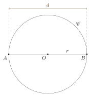

Eclats de vers : Matemat : Polygones
Table des matières
1. Introduction
1.1. Définition
Soit un nombre naturel \(n\).
Un polygone à \(n\) côtés est une figure géométrique délimitée par \(n\) segments reliant \(n\) points pour former un circuit fermé. Chaque point du circuit est appelé sommet du polygone, tandis que chaque segment est appelé côté du polygone.
Figure 1 : polygone à 7 côtés
Le schéma ci-dessus représente un exemple de polygone à sept côtés de sommets \(P_1,P_2,...,P_7\). Les côtés sont :
\[ [P_1,P_2] \]
\[ [P_2,P_3] \]
\[ \ldots \]
\[ [P_6,P_7] \]
\[ [P_7,P_1] \]
On définit généralement un polygone par la liste de ces sommets. Le polygone du schéma ci-dessus est appelé polygone \(P_1 P_2 P_3 P_4 P_5 P_6 P_7\).
1.2. Nomenclature
Les polygones les plus courants portent un nom. Nous avons déjà rencontré le triangle, qui n’est rien d’autre qu’un polygone à trois côtés. En voici quelques autres :
| Nom | Nombre de côtés |
|---|---|
| triangle | 3 |
| quadrilatère | 4 |
| pentagone | 5 |
| hexagone | 6 |
| heptagone | 7 |
| octogone | 8 |
| ennéagone | 9 |
| décagone | 10 |
| hendécagone | 11 |
| dodécagone | 12 |
1.3. Polyone régulier
Un polygone régulier est un polygone dont :
- tous les côtés ont la même longueur
- tous les angles sont de même amplitude
1.4. Diagonales
Une diagonale d’un polygone \(\mathcal{P}\) est un segment obtenu en reliant deux sommets non adjacents de \(\mathcal{P}\).
Par exemple, dans le schéma ci-dessous, les segments \([P_1,P_5]\) et \([P_5,P_7]\) sont des diagonales du polygone \(P_1 P_2 \ldots P_7\) :
2. Angles d’un polygone
2.1. Somme des angles
2.1.1. Par une décomposition en triangles
On obtient la smme des angles d’un polygone générique à \(n\) côtés en le décomposant en triangles. Il y a toutefois quelques précautions à prendre :
- les triangles doivent former une mosaïque qui recouvrent intégralement
le polygone
- les triangles ne peuvent donc pas se chevaucher
- on ne peut pas faire apparaître de nouveaux sommets sans ajouter de
nouveaux angles et obtenir un résultat incorrect
- on ne peut donc utiliser que les sommets du polygone
- les côtés des triangles sont donc soit des côtés du polygones, soit des diagonales
- les côtés des triangles ne peuvent pas se croiser
- on ne peut donc utiliser que les sommets du polygone
Le schéma ci-dessous donne un exemple de partition d’un polygone en triangles :
On voit que le polygone compte six côtés (c’est un hexagone) et peut se diviser en quatre triangles. On remarque aussi que la somme des angles de tous les triangles est égal à la somme des angles du polygone.
En général, un polygone \(\mathcal{P}_n\) à \(n\) côtés peut se diviser en \(n - 2\) triangles. Comme la somme des angles de chaque triangle vaut \(\pi = 180^\circ\), la somme des angles de \(\mathcal{P}_n\) vaut :
\[ (n - 2) \cdot \pi = (n - 2) \cdot 180^\circ \]
On a en particulier le tableau suivant :
| Polygone | Nombre de côtés | Somme des angles |
|---|---|---|
| quadrilatère | 4 | \(2 \cdot 180^\circ = 360^\circ\) |
| pentagone | 5 | \(3 \cdot 180^\circ = 540^\circ\) |
| hexagone | 6 | \(4 \cdot 180^\circ = 720^\circ\) |
| octogone | 8 | \(6 \cdot 180^\circ = 1080^\circ\) |
| décagone | 10 | \(8 \cdot 180^\circ = 1440^\circ\) |
| dodécagone | 12 | \(10 \cdot 180^\circ = 1800^\circ\) |
2.1.2. Par un parcours autour du polygone
Ce raisonnement est inspiré de cette vidéo de Micmath.
Imaginons un personnage fictif qui parcours un tour complet autour du polygone suivant :
Ce parcours se fait dans le sens anti-horlogique, en partant du point \(P\), avec une direction initiale donnée par le vecteur \(\vec{u}\). Notre personnage tourne à chaque sommet d’un angle \(\alpha_i\). l’angle total de sa rotation vaut donc :
\[ S = \sum_{i=1}^n \alpha_i \]
où \(n\) est le nombre de côtés. Mais comme il effectue un tour complet, on a aussi :
\[ S = 2 \ \pi \]
On en déduit que :
\[ \sum_{i=1}^n \alpha_i = 2 \ \pi \]
À chaque sommet \(i\), les angles \(\alpha_i\) et \(\gamma_i\) forment ensemble un angle plat :
\[ \alpha_i + \gamma_i = \pi \]
On a donc :
\[ \alpha_i = \pi - \gamma_i \]
La relation sur la somme des angles devient :
\[ \sum_{i=1}^n (\pi - \gamma_i) = 2 \ \pi \]
ou encore :
\[ \sum_{i=1}^n \pi - \sum_{i=1}^n \gamma_i = 2 \ \pi \]
La constante \(\pi\) ne dépendant pas de \(i\), on a simplement :
\[ n \ \pi - \sum_{i=1}^n \gamma_i = 2 \ \pi \]
Isolons la somme des angles internes du polygone :
\[ \sum_{i=1}^n \gamma_i = n \ \pi - 2 \ \pi \]
Mettons en évidence \(\pi\) :
\[ \sum_{i=1}^n \gamma_i = (n - 2) \ \pi \]
La somme dans le membre de gauche n’est rien d’autre que la somme des angles internes du polygone. Nous avons donc montré que cette somme vaut :
\[ \sum_{i=1}^n \gamma_i = (n - 2) \cdot \pi = (n - 2) \cdot 180^\circ \]
2.2. Angle d’un polygone régulier
Dans le cas d’un polygone régulier, tous les angles sont égaux. Notons \(\alpha_n\) un angle quelconque d’un polygone à \(n\) côtés. La somme des angles vaut :
\[ n \ \alpha_n = (n - 2) \ \pi \]
On a donc :
\[ \alpha_n = \frac{(n - 2) \ \pi}{n} = \frac{(n - 2) \cdot 180^\circ}{n} \]
On a en particulier le tableau suivant :
| Polygone régulier | Nombre de côtés | Somme des angles | Angle |
|---|---|---|---|
| quadrilatère | 4 | \(360^\circ\) | \(360^\circ/4 = 90^\circ\) |
| pentagone | 5 | \(540^\circ\) | \(540^\circ/5 = 108^\circ\) |
| hexagone | 6 | \(720^\circ\) | \(720^\circ/6 = 120^\circ\) |
| octogone | 8 | \(1080^\circ\) | \(1080^\circ/8 = 135^\circ\) |
| décagone | 10 | \(1440^\circ\) | \(1440^\circ/10 = 144^\circ\) |
| dodécagone | 12 | \(1800^\circ\) | \(1800^\circ/12 = 150^\circ\) |
On remarque aussi que :
\[ \lim_{n \to \infty} \alpha_n = \lim_{n \to \infty} \frac{(n - 2) \ \pi}{n} = \pi \]
Lorsque le nombre de côtés devient très grand, l’angle \(\alpha_n\) converge vers \(\pi = 180^\circ\).
3. Hexagone régulier
3.1. Angles au centre
Le schéma ci-dessous représente un hexagone régulier inscrit dans un cercle de centre \(O\) et de rayon \(r\) :
On constate que les six angles au centre d’amplitude \(\alpha\) forment un tour complet :
\[ 6 \ \alpha = 2 \ \pi = 360^\circ \]
On a donc :
\[ \alpha = \frac{\pi}{3} = 60^\circ \]
Examinons le triangle \(OAB\). Les longueurs des deux côtés reliés au centre \(O\) sont de longueurs égales au rayon \(r\). Il s’agit donc d’un triangle isocèle et les angles correspondants sont par symétrie de même amplitude :
\[ \beta = \gamma \]
La somme des angles du triangle \(OAB\) vaut \(180^\circ\) :
\[ \alpha + \beta + \gamma = 60^\circ + 2 \ \beta = 180^\circ \]
On en déduit que :
\[ \beta = \frac{180^\circ - 60^\circ}{2} = 60^\circ \]
Le triangle \(OAB\) a donc ses trois angles de même amplitude :
\[ \alpha = \beta = \gamma = 60^\circ = \frac{\pi}{3} \]
Il s’agit donc d’un triangle équilatéral dont les longueurs des côtés valent :
\[ c = r \]
Ce résultat montre aussi que les angles internes d’un hexagone valent :
\[ \beta + \gamma = 60^\circ + 60^\circ = 120^\circ \]
Le schéma devient donc :
Ce constat donne une méthode pour tracer aisément un hexagone régulier :
- tracer le cercle de centre \(O\)
- laisser le compas ouvert au même rayon \(r\)
- reporter le rayon du compas sur le cercle jusqu’à obtenir les six sommets de l’hexagone
3.2. Diagonales
Le schéma ci-dessous représente un hexagone régulier muni de toutes ses diagonales, les diamètres du cercle et les deux grands triangles formant un hexagramme :
Le cercle est de rayon \(r\). On définit les distances :
\[ a = \abs{CG} \]
\[ b = \abs{GE} \]
\[ c = \abs{OG} \]
\[ d = \abs{GD} \]
Par symétrie, on a :
\[ a = b \]
\[ \delta = \epsilon \]
\[ \alpha = \beta \]
\[ \lambda = \mu \]
Intéressons-nous à présent au triangle \(CGO\). On constate que \(\delta\) et \(\epsilon\) forment ensemble un angle plat de 180° :
\[ \delta + \epsilon = 180^\circ \]
Comme ces deux angles sont égaux, on a :
\[ 2 \ \delta = 180^\circ \]
c’est-à-dire :
\[ \delta = 90^\circ \]
Le triangle \(CGO\) est donc un triangle rectangle dont l’hypothénuse vaut :
\[ \abs{OE} = r \]
3.2.1. Angles
Les angles non droits du triangle rectangle \(CGO\) étant complémentaires, on a :
\[ \alpha = 90^\circ - 60^\circ = 30^\circ \]
Comme l’angle \(\alpha + \lambda\) est l’un des angles du triangle équilatéral \(OCD\), on a :
\[ \alpha + \lambda = 60^\circ \]
c’est-à-dire :
\[ \lambda = 60^\circ - \alpha = 60^\circ - 30^\circ = 30^\circ \]
et :
\[ \mu = \lambda = 30^\circ \]
On a donc finalement :
\[ \alpha = \beta = \lambda = \mu = \frac{\pi}{6} = 30^\circ \]
3.2.2. Longueurs
Le triangle \(CGO\) étant un triangle rectangle, on a :
\[ a = r \ \sin 60^\circ = r \ \frac{\sqrt{3}}{2} \]
La longueur \(L\) du côté \([C,E]\) du triangle \(ACE\) vaut donc :
\[ L = \abs{EC} = a + b = 2 \ a \]
c’est-à-dire :
\[ L = r \ \sqrt{3} \]
La longueur du plus petit côté du triangle \(CGO\) vaut :
\[ c = r \ \cos 60^\circ = \frac{r}{2} \]
Comme :
\[ c + d = \abs{OD} = r \]
on a aussi :
\[ d = r - c = r - \frac{r}{2} = \frac{r}{2} \]
Le segment \([C,E]\) divise le rayon \([O,D]\) en deux.
3.2.3. Conclusion
Par symétrie, on peut appliquer le même raisonnement aux autres côtés du triangle \(ACE\), et ainsi montrer que le triangle \(ACE\) est un triangle équilatéral de côté \(L = r \ \sqrt{3}\).
Il en va de même pour le triangle \(DFB\). Les deux grands triangles formant l’hexagramme, \(ACE\) et \(DFB\), sont donc équilatéraux.
Par symétrie et invariance sous rotation d’un sixième de tour (60°), il est clair que le triangle équilatéral \(ACE\) contient six triangles isométriques à \(CGO\) (en incluant \(CGO\) lui-même). Ces triangles possèdent donc les mêmes angles et les mêmes longueurs de côtés.
Soit \(T\) un des deux triangles équilatéraux \(ACE\) ou \(DFB\) formant l’hexagramme. Nous avons montré que :
- les rayons du cercle divisent les angles de \(T\) en deux angles égaux de 30°
- les angles situés entre les pointes de \(T\) et les côtés de l’hexagone sont également de 30°
- les côtés de \(T\) divisent les rayons du cercle en deux parties égales de longueur \(r/2\)
- réciproquement, les rayons du cercle divisent les côtés de \(T\) en deux parties égales de longueur \(r \ \sqrt{3} / 2\)
Le schéma devient :
3.3. Hexagramme
Le schéma ci-dessous représente un hexagone régulier muni de toutes ses diagonales, les diamètres du cercle et les deux grands triangles formant un hexagramme :
Nous avons tenu compte de la symétrie dans la notation des longueurs et des angles.
Le cercle est de rayon \(r\). On définit les distances :
\[ a = \abs{HD} \]
\[ c = \abs{HG} \]
3.3.1. Triangles compris entre l’hexagramme et les côtés de l’hexagone
Examinons à présent le triangle \(CJB\). Nous avons vu précédemment que les angles compris entre les triangles de l’hexagramme (\(ACE\) et \(DFB\)) et les côtés de l’hexagone valent 30°. On a donc :
\[ \lambda = 30^\circ \]
Le troisième angle \(\theta\) vaut donc :
\[ \theta = 180^\circ - 2 \cdot 30^\circ = 120^\circ \]
Les cinq autres triangles compris entre les côtés de l’hexagone et l’hexagramme sont par symétrie isométriques à \(CJB\).
3.3.2. Pointes de l’hexagramme
Examinons à présent les triangles formés aux pointes de l’hexagramme.
Le triangle \(DFB\) étant équilatéral, ses angles valent 60° et en particulier :
\[ \gamma = 60^\circ \]
La somme des angles dans le triangle \(HID\) nous donne :
\[ 2 \ \alpha + \gamma = 2 \ \alpha + 60^\circ = 180^\circ \]
c’est-à-dire :
\[ \alpha = \frac{180^\circ - 60^\circ}{2} = 60^\circ \]
Le triangle \(HID\) est donc aussi un triangle équilatéral et :
\[ a = 2 \ c \]
La longueur du côté \([E,C]\) peut s’écrire :
\[ 2 \ a + 2 \ c = 2 \ a + a = 3 \ a \]
Or, \([E,C]\) est un des côtés du triangle équilatéral \(ACE\) et est donc de longueur \(r \ \sqrt{3}\) :
\[ 3 \ a = r \ \sqrt{3} \]
ce qui nous donne la valeur de \(a\) :
\[ a = r \ \frac{\sqrt{3}}{3} \]
La longueur du troisième côté du triangle \(HID\) vaut :
\[ \abs{HI} = 2 \ c = a = r \ \frac{\sqrt{3}}{3} \]
Les côtés du triangle \(DFB\) divisent en trois parties égale le côté \([E,C]\) du triangle \(ACE\).
3.3.3. Conclusion
Les triangles compris entre les côtés de l’hexagone et l’hexagramme ont des angles aigus de 30° et un angle obtus de 120°.
Les pointes de l’hexagramme sont des triangles équilatéraux de côté \(r \ \sqrt{3}/3\), c’est-à-dire le tiers du côté des triangles formant l’hexagramme.
Soit \(T_1\) et \(T_2\) les deux triangles formant l’hexagramme. Les côtés de \(T_1\) divisent en trois parties égales les côtés de \(T_2\), et vice versa.
Le schéma devient :
3.4. Nombre d’or
Le schéma ci-dessous représente un hexagone régulier muni de ses diagonales :
Nous avons tenu compte de la symétrie dans la notation des longueurs et des angles.
Le cercle est de rayon \(r\). On définit les distances :
\begin{align*} a &= \abs{OI} \\ b &= \abs{GI} = \abs{IH} \\ c &= \abs{OG} = \abs{OH} \\ d &= \abs{IJ} \\ e &= \abs{GH} \\ f &= \abs{GJ} \end{align*}Nous avons vu précédemment que les côtés des grands triangles équilatéraux formant l’hexagramme coupent le rayon en deux parties égales. On a donc :
\[ c = \frac{r}{2} \]
3.4.1. Triangles rectangles
Les deux angles \(\delta\) forment ensemble un angle plat :
\[ 2 \ \delta = 180^\circ \]
d’où :
\[ \delta = 90^\circ \]
Les triangles \(GOI\), \(OHI\) et \(OJI\) sont donc des triangles rectangles.
3.4.1.1. Triangle \(OHI\)
Dans le triangle rectangle \(OHI\), on a par définition du cosinus :
\[ a = c \ \cos 60^\circ = \frac{r}{2} \ \cos 60^\circ \]
Comme le cosinus de 60° vaut \(1/2\), cette équation devient :
\[ a = \frac{r}{2} \cdot \unsur{2} = \frac{r}{4} \]
Le sinus nous donne :
\[ b = c \ \sin 60^\circ = \frac{r}{2} \ \sin 60^\circ \]
Comme le cosinus de 60° vaut \(\sqrt{3}/2\), cette équation devient :
\[ b = \frac{r}{2} \cdot \frac{\sqrt{3}}{2} = \frac{r \ \sqrt{3}}{4} \]
3.4.1.2. Triangle \(OJI\)
Dans le triangle \(OJI\), le théorème de Pythagore s’écrit :
\[ r^2 = a^2 + d^2 \]
Comme \(a = r/4\), cette relation devient :
\[ r^2 = \frac{r^2}{16} + d^2 \]
Isolons \(d^2\) :
\[ d^2 = r^2 - \frac{r^2}{16} \]
Mettons les membres de drotie au même dénominateur :
\[ d^2 = \frac{16 \ r^2 - r^2}{16} = \frac{15 \ r^2}{16} \]
Il ne nous reste plus qu’à prendre la racine carrée :
\[ d = \frac{r \ \sqrt{15}}{4} \]
3.4.2. Sommes
On a :
\[ f = b + d = \frac{r \ \sqrt{3}}{4} + \frac{r \ \sqrt{15}}{4} \]
Remarquons que :
\[ \sqrt{15} = \sqrt{3} \cdot \sqrt{5} \]
L’expression de \(f\) devient :
\[ f = \frac{r \ \sqrt{3}}{4} + \frac{r \ \sqrt{3} \ \sqrt{5}}{4} \]
Mettons en évidence au membre de droite :
\[ f = \frac{r \ \sqrt{3}}{4} \ \left( 1 + \sqrt{5} \right) \]
Le terme entre parenthèses vaut deux fois le nombre d’or \(\phi\) :
\[ f = \frac{r \ \sqrt{3}}{4} \cdot 2 \ \phi \]
On a donc finalement :
\[ f = \frac{r \ \sqrt{3}}{2} \ \phi \]
D’un autre côté, on a :
\[ e = 2 \ b = 2 \cdot \frac{r \ \sqrt{3}}{4} = \frac{r \ \sqrt{3}}{2} \]
Le rapport des longueurs :
\[ \frac{f}{e} = \frac{\phi \ r \ \sqrt{3}/2}{r \ \sqrt{3}/2} \]
nous donne donc le nombre d’or :
\[ \frac{f}{e} = \phi \]
4. Pentagone régulier
4.1. Angles au centre
Le schéma ci-dessous représente un pentagone régulier inscrit dans un cercle de centre \(O\) et de rayon \(r\) :

On constate que les cinq angles au centre d’amplitude \(\alpha\) forment un tour complet :
\[ 5 \ \alpha = 2 \ \pi = 360^\circ \]
On a donc :
\[ \alpha = \frac{2 \ \pi}{5} = 72^\circ \]
Examinons le triangle \(OAB\). Les longueurs des deux côtés reliés au centre \(O\) sont de longueurs égales au rayon \(r\). Il s’agit donc d’un triangle isocèle et les angles correspondants sont par symétrie de même amplitude :
\[ \beta = \gamma \]
La somme des angles du triangle \(OAB\) vaut \(180^\circ\) :
\[ \alpha + \beta + \gamma = 72^\circ + 2 \ \beta = 180^\circ \]
On en déduit que :
\[ \beta = \frac{180^\circ - 72^\circ}{2} = 54^\circ \]
Ce résultat montre aussi que les angles internes d’un pentagone valent :
\[ \beta + \gamma = 54^\circ + 54^\circ = 108^\circ \]
Le schéma devient donc :
4.2. Diagonales
Le schéma ci-dessous représente un pentagone muni de toutes ses diagonales formant un pentagramme, ainsi que les rayons du cercle circonscrit :
Nous avons tenu compte de la symétrie dans la notation des angles.
Examinons le triangle \(ABE\). La somme des angles nous donne :
\[ 2 \ \alpha + 108^\circ = 180^\circ \]
On en déduit la valuer des deux autres angles :
\[ \alpha = \frac{180^\circ - 108^\circ}{2} = 36^\circ \]
L’angle compris entre un côté du pentagone et la plus proche de ses diagonales vaut 36°.
4.3. Pentagramme
Le schéma ci-dessous représente un pentagone muni de toutes ses diagonales formant un pentagramme, ainsi que les rayons du cercle circonscrit :
Nous avons tenu compte de la symétrie dans la notation des angles.
L’angle \(\alpha\) forme, avec deux angles de 36°, un angle interne du pentagone. On a donc :
\[ \alpha + 2 \cdot 36^\circ = 108^\circ \]
c’est-à-dire :
\[ \alpha = 108^\circ - 2 \cdot 36^\circ = 36^\circ \]
La somme des angles du triangle \(AFG\) nous donne :
\[ \alpha + 2 \ \gamma = 36^\circ + 2 \ \gamma = 180^\circ \]
c’est-à-dire :
\[ \gamma = \frac{180^\circ - 36^\circ}{2} = 72^\circ \]
Examinons à présent le triangle \(AFE\). On obtient directement la valeur de l’angle \(\theta\) par :
\[ \theta + 36^\circ + 36^\circ = 180^\circ \]
qui nous donne :
\[ \theta = 180^\circ - 36^\circ - 36^\circ = 108^\circ \]
4.3.1. Conclusion
Les petits triangles formant les pointes du pentagramme ont un angle au sommet de 36° et deux autres angles de 72°.
Les triangles compris entre les côtés du pentagone et le pentagramme ont un angle obtus de 108° et deux angles aigus de 36°.
Le schéma devient :
4.4. Invariance sous rotation
Le schéma ci-dessous représente un pentagone muni de toutes ses diagonales formant un pentagramme, ainsi que les rayons du cercle circonscrit :
Nous avons déjà tenu compte de la symétrie dans la notation des longueurs.
On définit les distances :
\[ a = \abs{BG} = \abs{FE} \]
\[ b = \abs{GH} = \abs{HF} \]
\[ c = \abs{AF} = \abs{ID} \]
\[ d = \abs{FJ} = \abs{JI} \]
Le pentagone régulier est invariant lorsqu’on le fait tourner d’un cinquième de tour, c’est-à-dire de 72°. Les longueurs, les proportions et les angles entre ses côtés et ses diagonales ne varient donc pas non plus. En particulier, si on fait tourner le triangle \(BGA\) de 72° dans le sens horlogique, on obtient le triangle \(AFE\), qui possède des propriétés identiques. Leurs côtés correspondants sont donc égaux et :
\[ a = c \]
En utilisant le même raisonnement, si on fait tourner le triangle \(AFE\) de 72° dans le sens horlogique, on obtient le triangle \(EID\), qui possède des propriétés identiques. Leurs côtés correspondants sont donc égaux et :
\[ 2 \ b = 2 \ d \]
c’est-à-dire :
\[ b = d \]
On a aussi comme conséquences immédiates :
\[ \abs{AF} = c = a = \abs{FE} \]
et :
\[ \abs{BF} = a + 2 \ b = c + 2 \ d = \abs{FD} \]
4.5. Nombre d’or
Le schéma ci-dessous représente un pentagone muni de toutes ses diagonales formant un pentagramme, ainsi que les rayons du cercle circonscrit :
Nous avons tenu compte de la symétrie et de l’invariance sous rotation d’un cinquième de tour dans la notation des longueurs.
Le cercle est de rayon \(r\). La longueur du côté du pentagone se note :
\[ l = \abs{AB} = \abs{BC} = \abs{CD} = \abs{DE} = \abs{EA} \]
On définit aussi les distances :
\[ a = \abs{BF} = \abs{FD} \]
\[ c = \abs{AF} = \abs{FE} \]
4.5.1. Triangle isocèle
Dans le triangle \(AFB\), on a :
\[ \alpha + 72^\circ + 36^\circ = 180^\circ \]
d’où :
\[ \alpha = 72^\circ \]
Les deux angles aigus du triangle \(AFB\) sont donc égaux. Par symétrie, il s’agit donc d’un triangle isocèle et :
\[ a = l \]
4.5.2. Triangles semblables
On remarque que les triangles \(ADE\) et \(AEF\) ont des angles correspondants de même amplitude : ce sont donc des triangles semblables. Leurs rapports de longueurs sont donc identiques. On a en particulier :
\[ \frac{l}{c} =\frac{a + c}{l} \]
Comme \(a = l\), cette relation devient :
\[ \frac{l}{c} = \frac{l + c}{l} = \frac{l}{l} + \frac{c}{l} \]
ou :
\[ \frac{l}{c} = 1 + \frac{c}{l} \]
Posons :
\[ \phi = \frac{l}{c} \]
La relation entre les longueurs devient :
\[ \phi = 1 + \unsur{\phi} \]
Multiplions par \(\phi\). On obtient :
\[ \phi^2 = \phi + 1 \]
ou encore :
\[ \phi^2 - \phi - 1 = 0 \]
Nous avons vu dans le chapitre sur les proportions géométriques, que la solution positive de cette équation définit le nombre d’or :
\[ \phi = \frac{1+\sqrt{5}}{2} \]
La longueur de la diagonale du pentagone vaut :
\[ d = a + c \]
On a donc :
\[ \frac{d}{l} = \frac{a + c}{l} = \frac{l}{c} = \phi \]
Le rapport entre la longueur de la diagonale d’un pentagone et la longueur de son côté est égal au nombre d’or.
4.5.3. Cosinus de 36°
Dans le triangle \(ABF\), la loi des cosinus nous donne une expression de la longueur \(c\) :
\[ c^2 = l^2 + c^2 - 2 \ l \ c \ \cos 36^\circ \]
Divisons par \(c^2\) :
\[ 1 = \frac{l^2}{c^2} + 1 - 2 \ \frac{l}{c} \ \cos 36^\circ \]
Comme \(l/c = \phi\), cette équation devient :
\[ 1 = \phi^2 + 1 - 2 \ \phi \ \cos 36^\circ \]
Isolons le cosinus :
\[ \cos 36^\circ = \frac{\phi^2 + 1 - 1}{2 \ \phi} = \frac{\phi^2}{2 \ \phi} \]
c’est-à-dire :
\[ \cos 36^\circ = \frac{\phi}{2} \]
Le cosinus de 36° vaut la moitié du nombre d’or.
4.5.3.1. Sinus de 54°
Il en va de même pour le sinus de l’angle complémentaire, à savoir 54° :
\[ \sin 54^\circ = \frac{\phi}{2} \]
4.6. Rapport entre le côté et le rayon
Le schéma ci-dessous représente un pentagone régulier inscrit dans un cercle de centre \(O\) et de rayon \(r\) :
La longueur du côté du pentagone se note :
\[ l = \abs{AB} = \abs{BC} = \abs{CD} = \abs{DE} = \abs{EA} \]
On définit aussi les distances :
\[ a = \abs{AF} \]
\[ b = \abs{FB} \]
\[ c = \abs{OF} \]
4.6.1. Symétrie
Le point \(F\) est l’intersection entre le côté \([A,B]\) et le prolongement du rayon \([O,D]\). Les points \(F\), \(O\) et \(D\) sont donc alignés. Par conséquent, l’angle \(\alpha\) forme, avec deux angles de 72°, un angle plat :
\[ \alpha + 2 \cdot 72^\circ = 180^\circ \]
Isolons \(\alpha\) :
\[ \alpha = 180^\circ - 2 \cdot 72^\circ = 180^\circ - 144^\circ \]
Cet angle vaut donc :
\[ \alpha = 36^\circ \]
On peut tenir le même raisonnement pour l’angle \(\gamma\) :
\[ \gamma = 36^\circ \]
On a donc :
\[ \alpha = \gamma \]
Par symétrie, on a aussi :
\[ a = b \]
\[ \delta = \epsilon \]
Comme :
\[ a + b = 2 \ a = l \]
on en déduit que :
\[ a = \frac{l}{2} \]
Les angles \(\delta\) et \(\epsilon\) mis ensemble forment également un angle plat :
\[ 2 \ \delta = 180^\circ \]
c’est-à-dire :
\[ \delta = 90^\circ \]
Le triangle \(AOF\) est donc un triangle rectangle.
4.6.2. Pythagore
Appliquons le théorème de Pythagore au triangle rectangle \(AOF\) :
\[ r^2 = a^2 + c^2 \]
Comme \(a = l/2\), cette équation peut se réécrire :
\[ r^2 = \frac{l^2}{4} + c^2 \]
La longueur du côté \([O,F]\) peut s’exprimer en fonction du cosinus de 36° :
\[ c = r \ \cos 36^\circ \]
La relation de Pythagore devient alors :
\[ r^2 = \frac{l^2}{4} + r^2 \ (\cos 36^\circ)^2 \]
On peut remplacer le cosinus de 36° par la moitié du nombre d’or :
\[ r^2 = \frac{l^2}{4} + r^2 \ \left(\frac{\phi}{2}\right)^2 = \frac{l^2}{4} + \frac{r^2 \ \phi^2}{4} \]
Isolons \(l^2\) :
\[ l^2 = 4 \ r^2 - r^2 \ \phi^2 \]
et divisons par \(r^2\) :
\[ \frac{l^2}{r^2} = 4 - \phi^2 \]
Comme \(\phi^2 = \phi + 1\), cette équation devient :
\[ \frac{l^2}{r^2} = 4 - \phi - 1 = 3 - \phi \]
Il ne nous reste qu’à prendre la racine carrée :
\[ \frac{l}{r} = \sqrt{3 - \phi} \]
pour obtenir la valeur du rapport entre le côté d’un pentagone régulier et le rayon de son cercle circonscrit.
5. Octogone régulier
5.1. Angles au centre
Le schéma ci-dessous représente un octogone régulier inscrit dans un cercle de centre \(O\) et de rayon \(r\) :
On constate que les huit angles au centre d’amplitude \(\alpha\) forment un tour complet :
\[ 8 \ \alpha = 2 \ \pi = 360^\circ \]
On a donc :
\[ \alpha = \frac{\pi}{4} = 45^\circ \]
Examinons le triangle \(OAB\). Les longueurs des deux côtés reliés au centre \(O\) sont de longueurs égales au rayon \(r\). Il s’agit donc d’un triangle isocèle et les angles correspondants sont par symétrie de même amplitude :
\[ \beta = \gamma \]
La somme des angles du triangle \(OAB\) vaut \(180^\circ\) :
\[ \alpha + \beta + \gamma = 45^\circ + 2 \ \beta = 180^\circ \]
On en déduit que :
\[ \beta = \frac{180^\circ - 45^\circ}{2} = 67,5^\circ \]
Ce résultat montre aussi que les angles internes d’un octogone valent :
\[ \beta + \gamma = 67,5^\circ + 67,5^\circ = 135^\circ \]
Le schéma devient :
5.2. Diagonales
Le schéma ci-dessous représente un octogone régulier muni de certaines de ses diagonales, ainsi que les diamètres du cercle :
Nous avons tenu compte de la symétrie dans la notation des angles.
Dans le quadrilatère \(IJKL\), la somme des angles vaut 360° :
\[ 4 \ \delta = 360^\circ \]
ce qui nous donne la valeur de \(\delta\) :
\[ \delta = 90^\circ \]
Comme \(\delta\) et \(\epsilon\) forment ensemble un angle plat, on a :
\[ \delta + \epsilon = 90^\circ + \epsilon = 180^\circ \]
et :
\[ \epsilon = 90^\circ \]
La somme des angles dans le quadrilatère \(JEDK\) nous donne :
\[ 2 \ \epsilon + 2 \ \tau = 2 \cdot 90^\circ + 2 \ \tau = 360^\circ \]
d’où :
\[ \tau = \frac{360^\circ - 2 \cdot 90^\circ}{2} = 90^\circ \]
Comme \(\epsilon\) et \(\chi\) forment ensemble un angle plat, on a :
\[ \epsilon + \chi = 90^\circ + \chi = 180^\circ \]
et :
\[ \chi = 90^\circ \]
La somme des angles dans le triangle \(HLG\) nous donne :
\[ 2 \ \alpha + \chi = 2 \ \alpha + 90^\circ = 180^\circ \]
c’est-à-dire :
\[ \alpha = \frac{180^\circ - 90^\circ}{2} = 45^\circ \]
Les angles \(\alpha\) et \(\gamma\) forment, avec un angle de 67.5°, un des angles internes de l’octogone qui vaut 135°. On a donc :
\[ \alpha + \gamma + 67.5^\circ = 45^\circ + \gamma + 67.5^\circ = 135^\circ \]
c’est-à-dire :
\[ \gamma = 135^\circ - 45^\circ - 67.5^\circ = 22.5^\circ \]
5.2.1. Conclusion
Les diagonales d’un octogone régulier forment
- des quadrilatères dont les angles sont droits
- des petits triangles rectangles dont les angles aigus valent 45°
- des angles de 22.5° entre les rayons du cercle circonscrit et les diagonales construites en sautant deux sommets de l’octogone
Le schéma devient :
5.3. Nombre d’argent
Le schéma ci-dessous représente un octogone régulier muni de certaines de ses diagonales, ainsi que les diamètres du cercle :
Nous avons tenu compte de la symétrie, de l’invariance sous rotation et des angles droits dans la notation des longueurs et des angles.
Le cercle est de rayon \(r\). La longueur du côté de l’octogone se note :
\[ l = \abs{AB} = \abs{BC} = \ldots \]
En tenant compte des multiples quadrilatères qui sont des rectangles, on obtient :
\[ l = \abs{LI} = \abs{KJ} = \ldots \]
On définit aussi la distance :
\[ a = \abs{GL} = \abs{FK} = \ldots \]
5.3.1. Pythagore
Appliquons le théorème de Pythagore au triangle rectangle \(HLG\) :
\[ l^2 = a^2 + a^2 = 2 \ a^2 \]
Isolons \(a^2\) :
\[ a^2 = \frac{l^2}{2} \]
et prenons la racine carrée :
\[ a = \frac{l}{\sqrt{2}} \]
En multipliant le numérateur de le dénominateur de la fraction par \(\sqrt{2}\), il vient :
\[ a = \frac{l \ \sqrt{2}}{\sqrt{2} \cdot \sqrt{2}} \]
et finalement :
\[ a = \frac{l \ \sqrt{2}}{2} \]
5.3.2. Longueur maximale de l’octogone
La longueur \(L\) du segment \([F,C]\), qui représente aussi la longueur maximale de l’octogone, vaut :
\[ L = a + l + a = \frac{l \ \sqrt{2}}{2} + l + \frac{l \ \sqrt{2}}{2} \]
ou encore :
\[ L = l + 2 \cdot \frac{l \ \sqrt{2}}{2} = l + l \ \sqrt{2} \]
et finalement :
\[ L = l \ (1 + \sqrt{2}) \]
Si on compare avec le nombre d’argent :
\[ \psi = 1 + \sqrt{2} \]
on voit que :
\[ \frac{L}{l} = \psi \]
Le rapport entre la longueur maximale d’un octogone et la longueur de son côté est égal au nombre argent.
5.3.3. Tangente de 67.5°
Le triangle \(BCF\) est un triangle rectangle. On a donc par définition :
\[ \tan 67.5^\circ = \frac{L}{l} = \frac{l \ (1 + \sqrt{2})}{l} \]
et finalement :
\[ \tan 67.5^\circ = 1 + \sqrt{2} \]
Autrement dit, cette tangente est égale au nombre d’argent :
\[ \tan 67.5° = \psi \]
5.3.3.1. Tangente de 22.5°
On a :
\[ \tan 22.5^\circ = \unsur{\tan 67.5^\circ} = \unsur{\psi} \]
Par définition du nombre d’argent, on a \(1/\psi = \psi -2\) et :
\[ \tan 22.5^\circ = \psi - 2 \]
6. Périmètre du cercle
6.1. Raisonnement
\[ \frac{2 \ \pi}{2 \ n} = \frac{\pi}{n} \]
\[ p = \lim_{n \to \infty} 2 \ n \sin(\pi/n) \ r \]
\[ p = r \ \lim_{n \to \infty} n \sin(\pi/n) \]
Quand \(r = 1\) :
\[ \lim_{n \to \infty} 2 \ n \sin(\pi/n) = 2 \ \pi \]
\[ p = r \ \lim_{n \to \infty} n \sin(\pi/n) = 2 \ \pi \ r \]
6.2. Diamètre
Le schéma ci-dessous représenté un cercle \(\mathscr{C}\) de centre \(O\), de rayon \(r\) et de diamètre \(d\) :

Le nombre pi, noté \(\pi\), se définit comme étant le rapport constant entre le périmètre du cercle et son diamètre. Si \(p\) est le périmètre de \(\mathscr{C}\), on a donc :
\[ \pi = \frac{p}{d} \]
ou encore :
\[ p = \pi \ d \]
Comme le diamètre vaut deux fois le rayon \(r\) :
\[ d = 2 \ r \]
on en déduit la forme alternative :
\[ p = 2 \ \pi \ r \]
6.3. Amplitude d’un angle
TODO : adapter
L’amplitude d’un angle, exprimée en radians, se définit comme le rapport entre :
- la longueur \(l\) d’un arc de cercle
- dont le centre est situé au sommet de l’angle
- qui est délimité par les côtés de l’angle
- le rayon \(r\) de ce même cercle
Dans le schéma ci-dessus, l’amplitude \(\alpha\) de l’angle \(\widehat{BAC}\) vaut :
\[ \alpha = \frac{l}{r} \]
L’amplitude de l’angle de sommet \(\angle BAC\) se note :
\[ \abs{\widehat{BAC}} \]
ou encore :
\[ \abs{\angle BAC} \]
Lorsque les côtés de l’angle \(\widehat{BAC}\) sont évidents d’après le contexte, on note simplement l’amplitude par :
\[ \abs{\widehat{A}} = \abs{\widehat{BAC}} \]
En pratique, on confond souvent un angle avec son amplitude.
6.4. Limite
\[ \lim_{n \to \infty} \frac{n}{\pi} \ \sin(\pi/n) = 1 \]
\[ \lim_{n \to \infty} \frac{\sin(\pi/n)}{\pi/n} = 1 \]